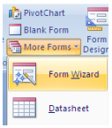
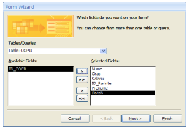
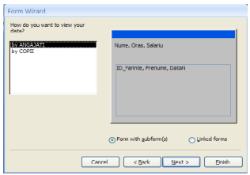
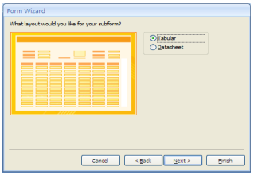
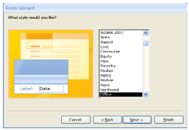
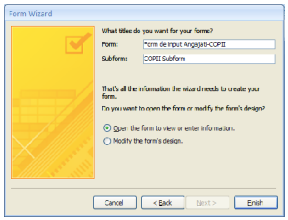
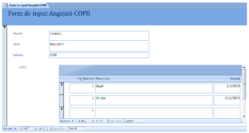
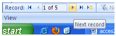
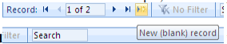
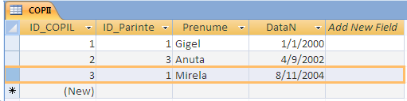

|  |
Formularele reprezintă ferestre ce permit adăugare, modificarea, ştergerea datelor dintr-o bază de date. Formularele sunt special create astfel încât să permită cât mai facil şi rapid operaţiile de mai sus.
Din ribbon-ul Create alegeţi |
|
În fereastra de wizard deschisă alegem câmpurile Salariu, Oras şi Nume din tabela ANGAJATI, iar din tabela COPII, alegem ID_Parinte, Prenume şi DataN. Vom putea să modificăm datele din două tabel în acelaşi timp. Apăsăm Next. |
Access şi-a dat seama că am ales date din
două tabele şi acum trebuie să alegem care dintre
ele este |
|  |  |
Ca layout alegem modul Tabular. Dăm Next. |
Alegem un stil de formatare şi apăsăm Next. |
|  |  |
|  |
În final, completăm numele pentru formular şi subformular:
Observaţi că avem o singură fereastră de unde am putea modifica şi angajaţi (partea de sus) şi copiii angajaţilor (partea de jos, în funcţie de părintele selectat). |
|  |
Există două modalităţi de navigare :
|
|  |
Dacă vrem să trecem la următorul angajat, apăsăm butonaşul Next Record,. din partea de jos. |
Observăm că acum este afişat angajatul Popescu care nu are nici un copil.
Cu acest instrument putem să facem orice operaţie de modificare fără a mai fi nevoie să
deschidem ambele tabele. De exemplu, revenind la primul angajat, Ionescu, apăsăm New Record
în tabela
În acest moment nu numai că a fost introdus în tabel copilul Ionica, dar el a fost asignat angajatului Ionescu. Dacă deschideţi tabela COPII observaţi noua înregistrare pentru Ionica, care are deja la Parinte_ID valoarea 1 (care îl reprezintă pe angajatul Ionescu).
În acest Formular nu se pot face numai adăugări de linii noi, dar și modificări, sortări, filtrări, s.a.m.d.